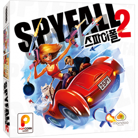
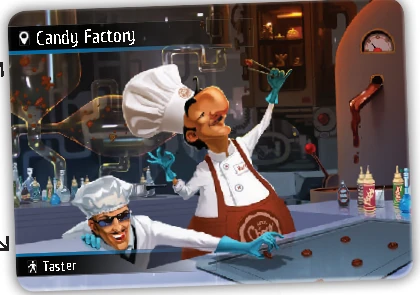
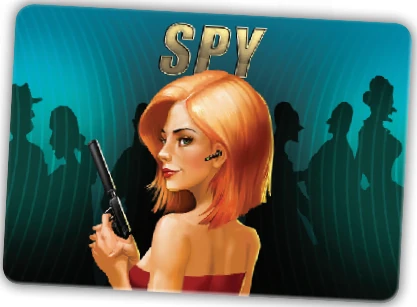
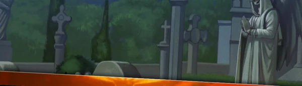
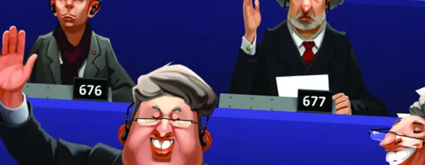

A · 진행 중 지목
한 사람당 라운드에 한 번
누구나 시간을 멈추고 한 명을 스파이로 지목해 투표를 요청할 수 있어요. 스파이도 가능해요. 기준 득표를 채우면 그 사람만 카드를 공개하고 라운드가 끝나요. 부족하면 시간을 다시 켜고 중단한 지점부터 계속해요.
SPYFALL 2 · SECRET LOCATION
우리가 어디 있는지,
모르는 사람이 섞여 있어요.
같은 장소를 아는 사람들 사이에서 질문과 답으로 스파이를 찾아요. 너무 자세히 말하면 스파이가 장소를 알아챌 수 있어요.

일반 플레이어는 스파이를 찾고, 스파이는 장소를 맞혀요. 마지막에는 누적 점수가 가장 높은 사람이 승리해요.


장소마다 장소 카드 10장과 스파이 카드 2장이 한 묶음이에요. 이런 묶음이 20개, 총 240장이 들어 있어요. 장소 카드의 역할은 특별 능력이 아니라 답변할 때 맡을 인물이에요.
위 두 장은 공식 영문 설명서에 나온 실제 카드 예시예요. 장소 이름과 아래 장소 목록은 한국어판 표기를 따랐어요.
먼저 전체 묶음을 섞고 인원수만큼 뽑으면 안 돼요. 스파이가 빠질 수 있어요. 스파이를 아래에 둔 상태에서 먼저 필요한 장수를 가져와 섞어요.
| 참가 인원 | 3–4인 | 5–6인 | 7–8인 | 9–10인 | 11–12인 |
|---|---|---|---|---|---|
| 제한 시간 | 6분 | 7분 | 8분 | 9분 | 10분 |
질문자는 한 사람을 지정해 질문 하나를 해요. 답변이 끝나면 방금 답한 사람이 새로운 질문자가 돼요. 누구에게든 물을 수 있지만, 자기에게 방금 물어본 사람에게 바로 되물을 수는 없어요. 같은 질문에 꼬리 질문을 덧붙이지 않아요.
지수 → 민호“여기서는 오래 서 있어도 괜찮아?”
민호의 답“계속 그러면 좀 지칠 것 같아.”
민호 → 수빈“너는 여기에 자주 오는 편이야?”
위 대화는 설명을 위해 만든 예시예요. 민호는 지수에게 바로 질문을 돌려줄 수 없어서 수빈을 골랐어요.
“여기에서는 누가 가장 바쁠까?”, “끝나면 바로 집에 갈 수 있어?”, “여기서 휴대폰을 꺼내도 될까?”처럼 여러 장소에 어울리는 질문으로 시작하고, 답변이 쌓이면 조금씩 좁혀 보세요. 정답이 하나로 정해진 퀴즈는 아니에요.
A · 진행 중 지목
누구나 시간을 멈추고 한 명을 스파이로 지목해 투표를 요청할 수 있어요. 스파이도 가능해요. 기준 득표를 채우면 그 사람만 카드를 공개하고 라운드가 끝나요. 부족하면 시간을 다시 켜고 중단한 지점부터 계속해요.
B · 제한 시간 종료
시간이 끝났다고 스파이가 곧바로 승리하는 건 아니에요. 진행자부터 시계 방향으로 각 사람에 대해 투표해요. 기준을 처음 충족한 사람이 공개해요. 스파이면 일반 플레이어 승리, 일반인이면 스파이 승리예요. 모두 기준 미달이면 스파이가 승리해요.
C · 스파이의 장소 선언
다른 사람이 시간을 멈추기 전에 스파이가 먼저 중단하고 카드를 공개해요. 이제 장소 목록을 보고 정답을 말할 수 있어요. 맞히면 스파이가, 틀리면 일반 플레이어가 승리해요. 지목 투표가 시작된 뒤에 끼어들어 장소를 맞힐 수는 없어요.
스파이 1명: 지목된 사람을 뺀 전원의 찬성이 필요해요. 다수결이 아니에요. 지목된 사람은 자기 투표에 참여하지 않아요.
투표 중에는 장소를 드러낼 수 있는 장황한 찬반 근거 설명을 피하는 것이 공식 권장 사항이에요.
카드를 나눈 뒤 모두 눈을 감고 스파이들만 잠깐 눈을 떠 서로를 확인해요. 다시 전원 눈을 뜬 뒤 시작해요. 이 변형은 스파이에게 유리해져요. 진행 중 지목 투표로 스파이가 잡히면 두 스파이 모두 점수를 받지 않아요. 나머지는 기본 규칙을 따라요.
지목 추가 점수는 그 스파이를 맨 처음 지목했던 사람에게 가요. 첫 투표가 성립하지 않았고 나중에 다른 사람의 투표로 잡혔더라도 같아요.
합의한 라운드가 모두 끝나면 점수를 합쳐 가장 높은 사람이 승리해요.
한국어판 카드 이름 아래에 영문판 이름을 함께 적었어요. 영문판 그림은 같은 장소를 확인하는 용도예요. 게임 전에 모두 같이 훑어보세요. 스파이가 게임 중 목록만 오래 들여다보면 의심받기 쉬워요.
장소 20곳
찾는 장소가 없어요. 다른 이름으로 검색해 보세요.
Race Track
Construction Site
Wedding
Cat Show

Cemetery
Vineyard
Candy Factory
Harbor Docks
Jail
Jazz Club
Library
Coal Mine
Art Museum

The U.N.
Gas Station
Retirement Home
Rock Concert
Stadium
Subway
Sightseeing Bus
팝콘게임즈 공식 상품 안내의 장소 목록 그림이에요. 위 카드별 썸네일은 공식 영문 설명서에 실린 장소 그림 일부예요.
라운드 길이는 시작 전에 합의해요. 공식 영문 설명서는 3–4인 6분부터 11–12인 10분까지 인원에 맞춘 시간을 권장해요. 익숙한 모임에서 합의해 8분을 써도 돼요.
질문에 답한 사람이 다음 질문자가 돼요. 방금 자기에게 질문한 사람만 바로 다시 지목할 수 없어요. 시간 종료 후 투표는 진행자부터 시계 방향이에요.
한 장소 묶음에는 장소 카드가 10장뿐이라 12인일 때는 스파이 카드 2장이 모두 필요해요.
다른 사람이 시간을 멈춘 뒤에는 장소 선언을 할 수 없어요. 스파이가 먼저 게임을 중단하고 정체를 밝힌 경우에만 장소를 답해요.
장소별 주머니를 함께 사용할 수 있어요. 각 묶음의 카드 수를 맞추고 스파이 1명인 1탄 규칙으로 진행해요. 공식 설명서는 1탄 장소에도 2스파이 규칙을 쓰려면 동일한 1탄 세트가 두 개 필요하다고 안내해요.